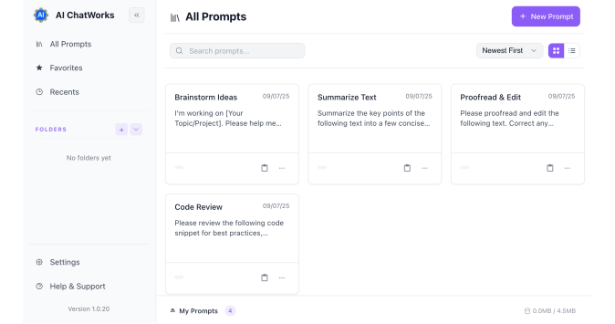

Your smart layer for
AI Chatbots
Stop wrestling with chat interfaces. Centralize your prompts, control text direction, and automate actions across ChatGPT, Claude, and Gemini.
Seamlessly Integrated With
Everything You Need in One Place
Smart tools for organized chat work. All in one place.
Command Library
A full-featured manager for your most valuable AI assets. Organize with folders, search instantly, and track usage statistics.
AI ChatWorks Flow
Press Cmd+Shift+F to open a command palette. Instantly search your entire library and run smart actions.
Universal Sync
All your prompts are stored locally and work uniformly across ChatGPT, Claude, and Gemini.
Right-Click Capture
Work directly in the chat, without copying or switching. Right-click any text on the page to save it as a new prompt.
Master the chat
with pro-level tools.
Deep features designed for power users who need more than just a clipboard history.
Centralized Prompt Library
Organize thousands of prompts with folders, tags, and color-coding. Access them instantly without leaving the chat.

Flow Command
Cmd+J to access everything.
Right-Click Capture
Save prompts directly from the web.
Frequently Asked Questions
Everything you wanted to know